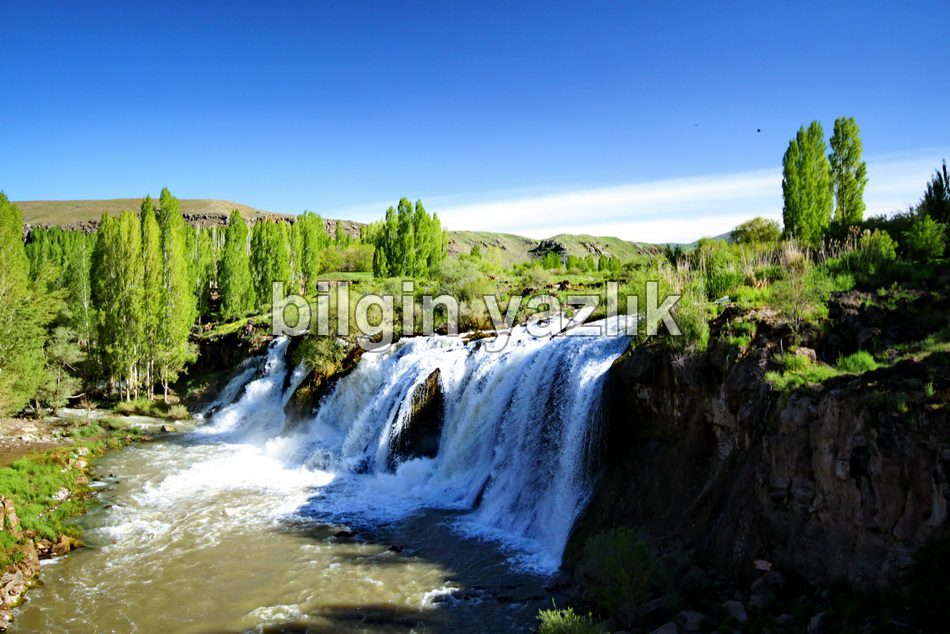
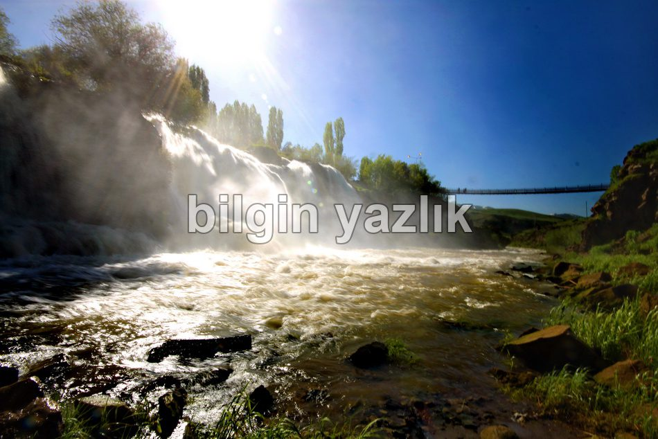
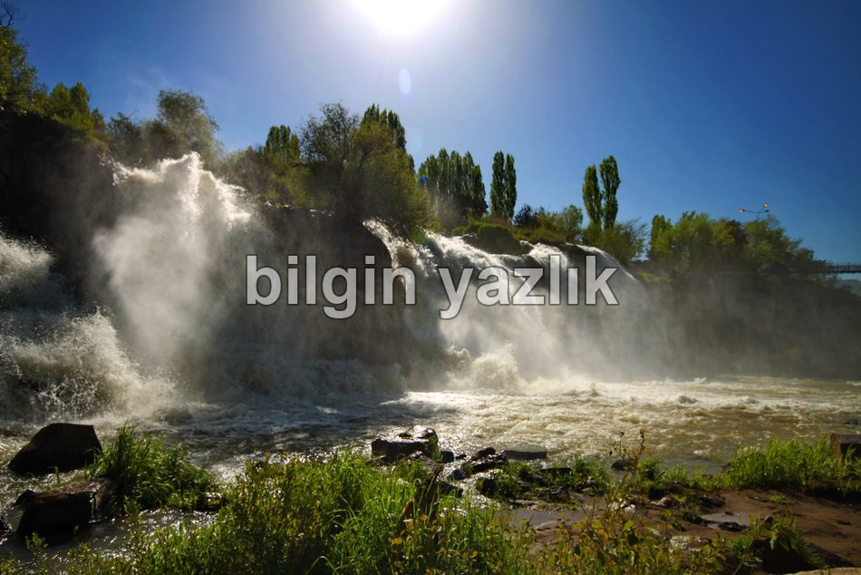
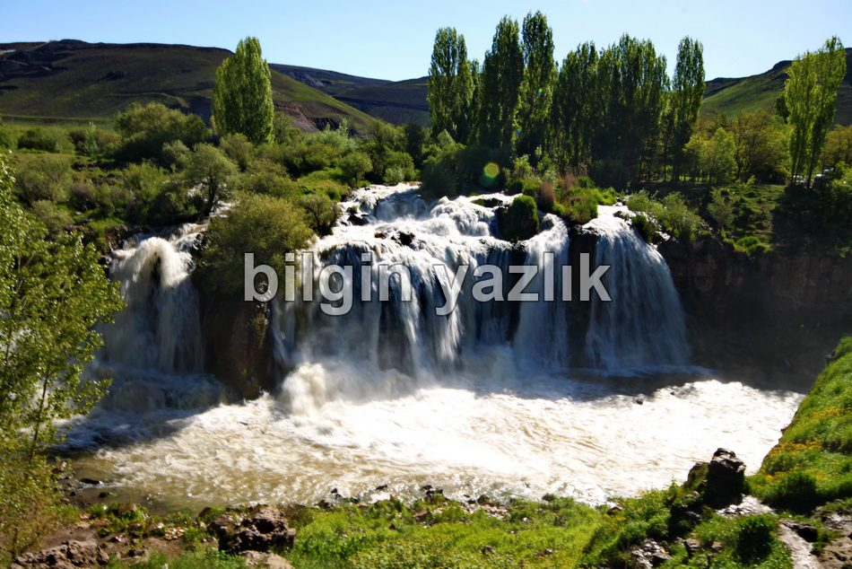
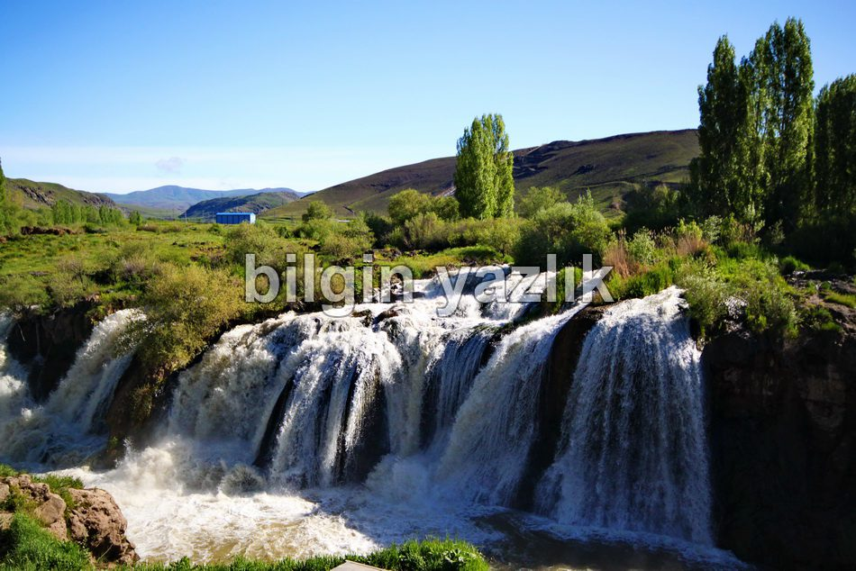
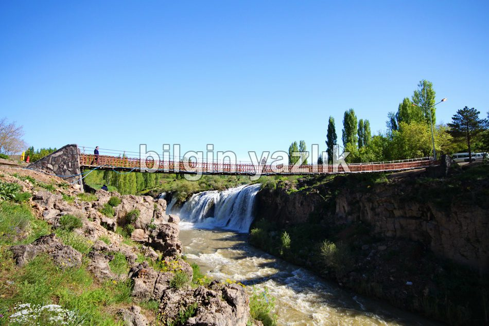
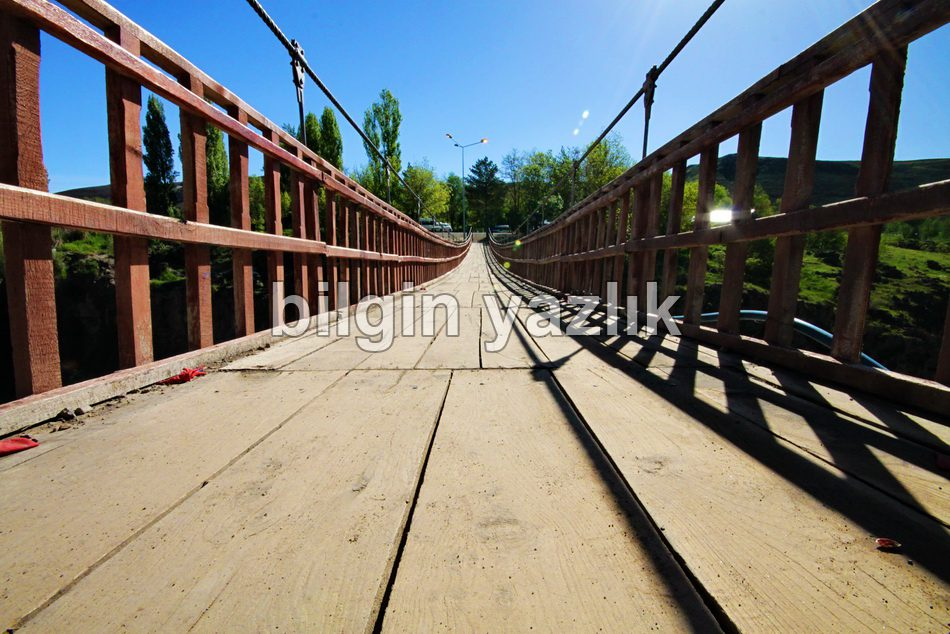
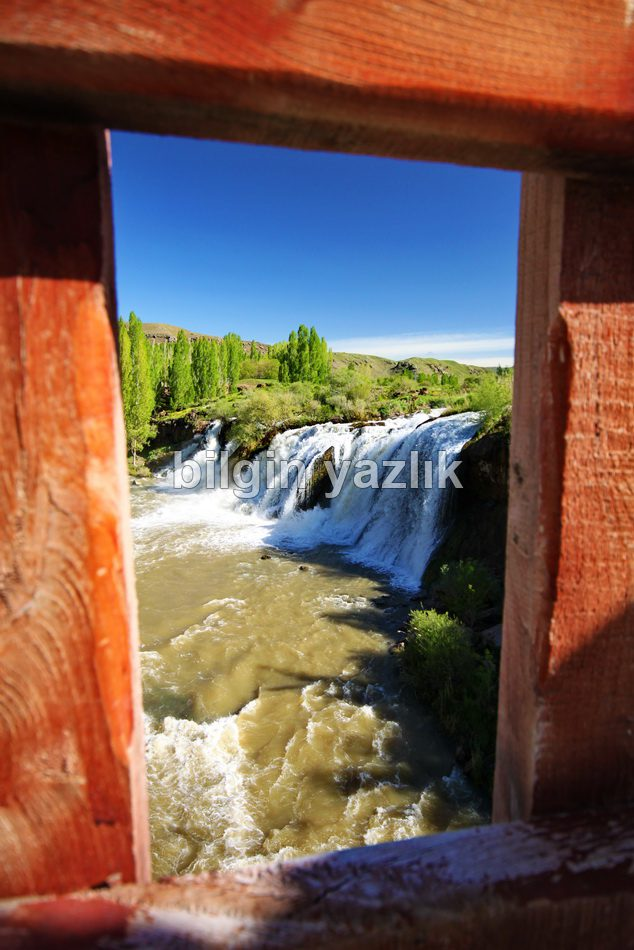
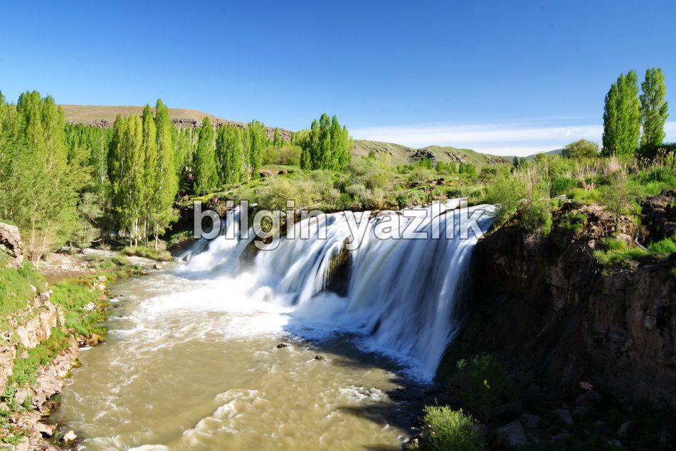

Van Gölü Havzası · 30 Mayıs 2013
Muradiye Şelalesi
Van ilinin Muradiye ilçesi sınırları içerisinde yer alan şelaleye Van – Erciş karayolundan ayrılan Muradiye yolu üzerinden gidilmektedir. Muradiye şehir merkezine dönmeden yola devam edilir ve birkaç km sonra sola doğru Muradiye Şelalesi levhasına gidilir. Şelale özellikle bahar aylarında gürül gürül akıyor ve Van gölünün sodalı sularına kadar süren bir serüvene aracılık ediyor. Şelalenin hemen yanı başına bir de asma köprü bulunuyor, oturma alanları, kamelyalar piknik yapmak için dizayn edilmişler. Görmeden geçilmeyek kadar güzel bir şelale burası.









Bu yazı taliyol arşivinden taşınmıştır. · özgün kayıt